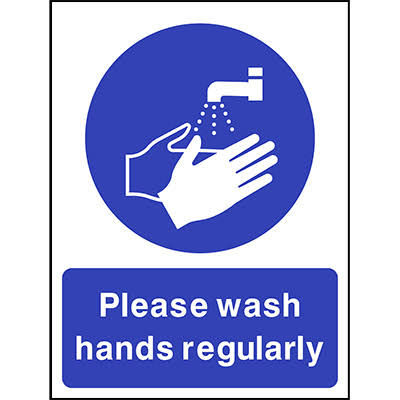
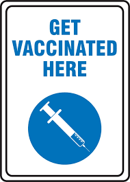
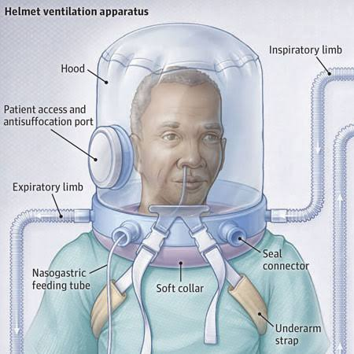
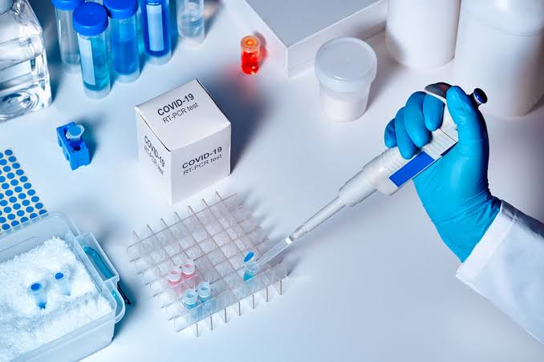

Prevention Tips
- Wear a mask in crowded places
- Wash hands regularly
- Maintain social distancing
- Get vaccinated
- Ventilation
Wearing masks, especially in indoor settings, helps to minimize the spread of the virus.
Frequent handwashing with soap and water, or using hand sanitizer, is essential for preventing the spread of the virus.
Maintaining physical distance from others helps to reduce the likelihood of transmission.
Administering COVID-19 vaccines is a crucial preventive measure to reduce the risk of severe illness, hospitalization, and death.
Ensuring adequate ventilation in indoor spaces can help to reduce the concentration of airborne viruses.
Lab Diagnostics
COVID-19 is detected using RT-PCR and antigen tests. Proper sample collection and processing are crucial for accurate results.
- RT-PCR Testing:
- Antigen Testing:
- Testing Strategies:
- Multi-Virus Testing:
This test, which amplifies viral genetic material, is highly sensitive and reliable for detecting current infections.
This test, which detects specific viral proteins, is quicker and more accessible than RT-PCR, making it useful for point-of-care testing.
Regular testing, especially for individuals at high risk or those with symptoms, is crucial for early detection and prevention of transmission.
Some tests can detect multiple viruses, such as the flu and COVID-19, at the same time, providing a broader view of potential infections.